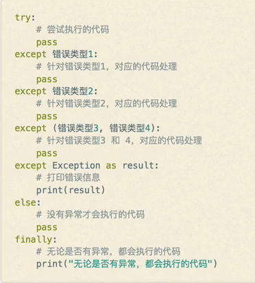
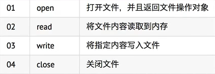
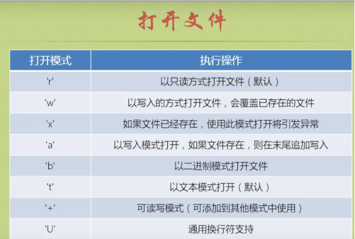
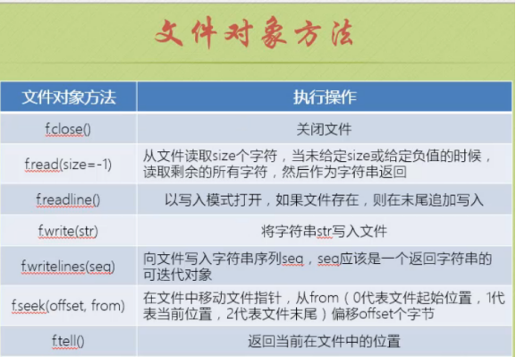

Python基础学习笔记（七）
捕获异常的语法格式：

文件的基本操作：

read方法 --读取文件：
open函数的第一个参数是要打开的文件名（文件名区分大小写）
read方法可以一次性读入并返回文件的所有内容
close方法负责关闭文件
文件指针：
文件指针标记从哪个位置开始读取数据
第一次打开文件时，通常文件指针会指向文件的开始位置
当执行了read方法后，文件指针会移动到读取内容的末尾
打开文件的方法：

注意：一般‘+’不用，对文件操作一般是只读或者只写即可，默认打开方式：‘r’
文件对象的方法：

例1：给文件追加内容
file = open('test.txt','a') #直接写文件名，默认与问项目同一路径下
file.write('\n')
file.write('baby')
file.close()
例2：seek重定向指针
#read默认全部读取，指针移向末尾，若想重新读取，需要seek重定向指针的位置
file = open('test.txt')
print(file.read())
file.seek(0,0)
print(file.read())
file.close()
例3：readline读取文件内容
file = open('test.txt','r')
list1 = []
while True:
text = file.readline()
list1.append(text)
if not text:
break
print(list1)
file.close()